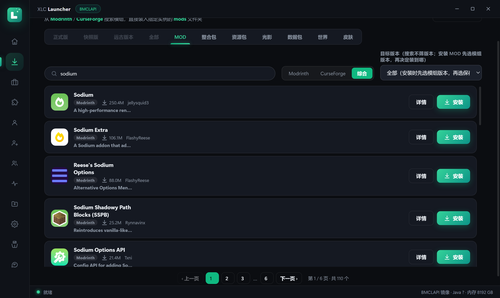
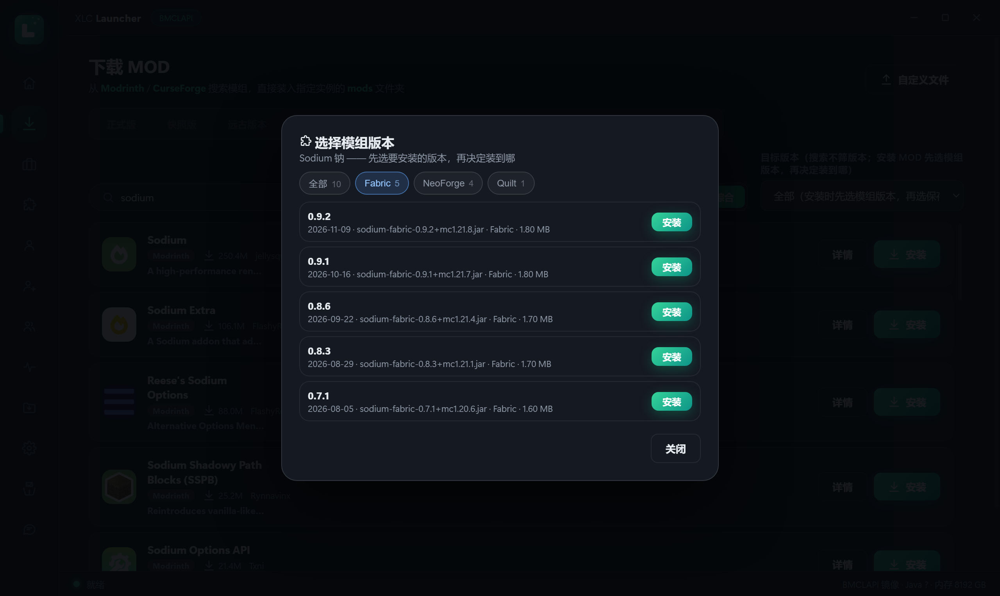
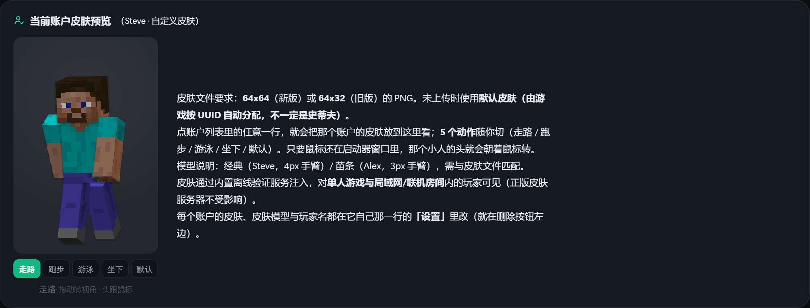
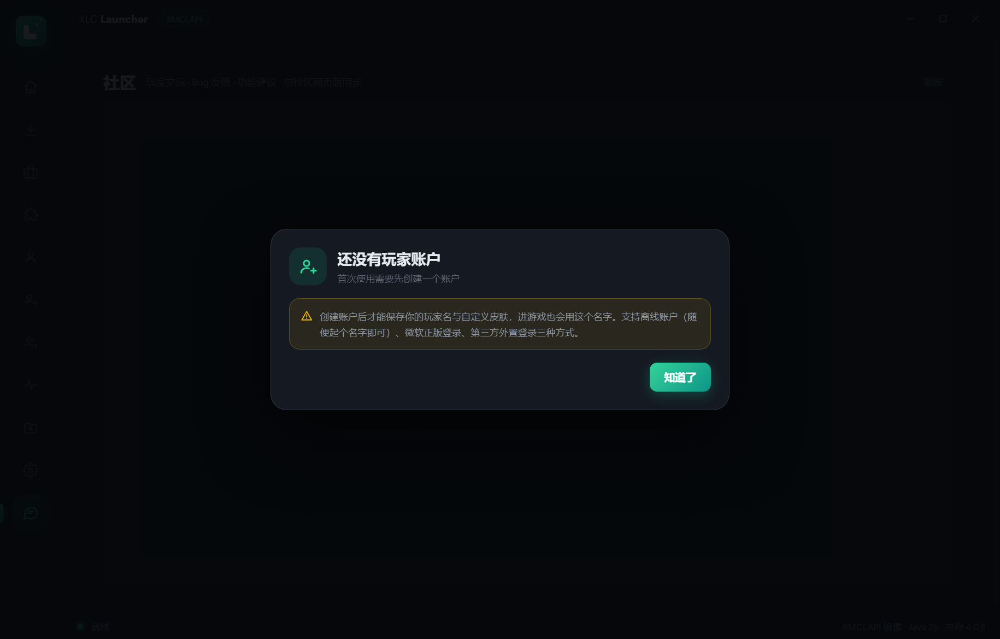
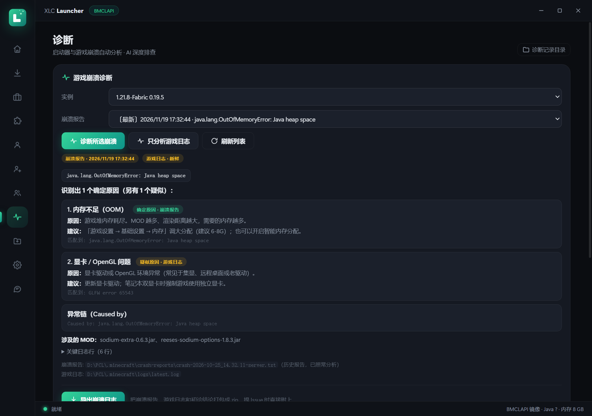

多实例与版本隔离
不同游戏版本、不同模组组合各自独立。内存、Java 路径、启动参数都能按实例单独设置，互不干扰。
从装游戏到装 MOD，从存档备份到联机对表，少在几个工具之间来回跳。
不同游戏版本、不同模组组合各自独立。内存、Java 路径、启动参数都能按实例单独设置，互不干扰。
Forge、NeoForge、Fabric、Quilt、OptiFine 直接选版本安装；镜像加速，境内网络也能顺畅下载。
从 Modrinth 与 CurseForge 搜索，按游戏版本筛选后安装；自动处理前置依赖，下载中途可停止，不留半截文件。
内置存档备份插件，支持手动、启动前、退出后自动备份；资源包、光影包、数据包统一扫描与管理。
离线登录、微软登录、Yggdrasil 外置登录；账户页提供 3D 皮肤预览，走路、跑步、游泳、坐下等动作都能看。
设置页内置诊断与崩溃日志导出；插件面板支持模组翻译器、手柄控制、联机模组清单对齐等扩展能力。
深色界面、绿色主按钮，信息密度和可读性兼顾。





全部为免安装便携版。下载后双击即可运行，配置与游戏数据放在 exe 旁边的 XLC数据 目录，不写注册表、不装系统服务。
最新公开版本
快照版，包含下载安装整页化、模组版本页、社区入口、诊断日志导出等新功能。
下载便携版 .exe稳定版
适合日常使用。皮肤预览转正，更新支持官网优先、GitHub 兜底。
下载便携版 .exe历史版本、MD5 与 SHA256 校验值见 GitHub Releases。
XLC Launcher 由 Xero Lite Craft 独立开发，基于 Electron，使用 MIT 许可证开源。界面与交互设计参考过 PCL、星落 LaunCher 等项目，仅借鉴功能形态，相关代码均为独立实现，未复制上述项目的源代码或美术资源，也不存在隶属、赞助或背书关系。
本项目与 Mojang / Microsoft 无关；Minecraft 是 Mojang AB 的商标，请支持正版。部分在线资源依赖 BMCLAPI 等公共镜像服务，感谢维护者的付出。
没找到答案？到 GitHub Issues 提问。
不需要。提供单文件便携版，下载后双击即可运行，不写注册表、不安装系统服务。配置与游戏数据保存在 exe 旁边的 XLC数据 目录。
支持 Forge、NeoForge、Fabric、Quilt 与 OptiFine 的一键安装和版本切换，并对境内网络提供镜像加速。
支持离线登录、微软正版登录，以及第三方外置登录（Yggdrasil）。离线账户也可以在本地设置皮肤。
默认存放在启动器可执行文件旁边的 .minecraft 目录，启动器自身配置存放在 XLC数据 目录，方便整体备份或迁移。
到 GitHub Issues 提交问题。若涉及安装失败或启动报错，请在启动器「设置 → 诊断」页导出崩溃日志一并附上，定位会快很多。